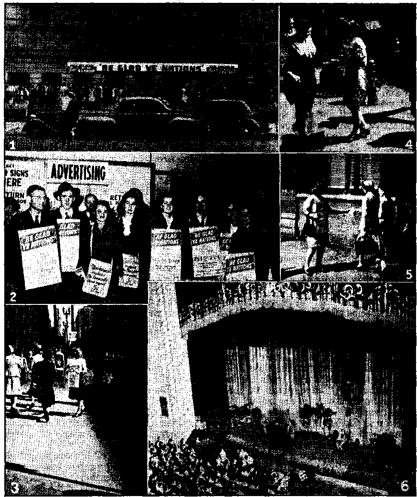

In Brief
Freedom Still Given Lip-Serviee
Baily Oklahoman Sticks Foot in It
Jet-propelled and Other Planes
Questioned on Freedom ol Worship
“That House at the End ol the' Lane” J 4
“Thy Word Is Truth”
The Ohio State Assembly of Jehovah’s witnesses
Witnessing in Canton Valais, Switzerland
“Ye Have Heard of the Patience of Job”
Published every other Wednesday by WATCHTOWER BIBLE AND TRACT SOCIETY, INC.
117 Adams St., Brooklyn 1, N. C. S. A.
OFFICERS
PreBfdent N. H. Knorr
Secretary W. E, Van Amhurgh
Editor Clayton J. Wood worth
Ffve Cents a Copy
$1 a year in the United States $1.25 tn Canada and all other countries
! NOTICE TO SUBSCRIBERS
Remittances; For your own safety, remit by postal or express money order, When coin or currency is lost in the ordinary mails, there is no redrefis. Remittances from countries other than those named below may be made to the Brooklyn office, but only by International postal money order.
Receipt of a new or renewal subscription*, will be acknowledged only when requested, Notice of Expiration is sent with the journal one month before subscription expires. Please renew promptly to avoid loss of copies. Send change of address direct to us rather than to the post office. Ytw request should reach us at least two weeks before Che date of issue with which it is to take effect. Send your old as well as the new address. Copies will not be forwarded by the post office to your new address unless extra postage is provided by you.
Published also in Greek, Portuguese, Spanish, and Ukrainian.
OFFICES FOR OTHER COUNTRIES
Argentina Calle Honduras 5646-48, Buenos Aires Australia 2 Homebush Rd., Strathfleld, X, S. W.
Brazil Rua Liclnio Cardoso 330, Rio de Janeiro Canada 40 Irwin Ave., Toronto 5, Ontario, Canada England 34 Craven Terrace, London, W. 2
Mexico Calzada Melchor Ocampo 71, Mexico, D. F. South Africa 623 Boston House, Cape Town
Sintered as second-class matter at Brooklyn, N. Y., under the Act of March 3, 1879.
The Pipe Line and the Ledo Road
♦ Everybody knows about the Burma Road into China, and how the Japanese gained control of it, and how thereafter the only way that the Allies could get supplies through was to send them by air. Many know, too, about the Ledo Road, sometimes called the Stillwell Road, and how this road, 1,044 miles from India intoChina, was put through one of the most difficult parts of the world in 25 months. It should be generally known that this road, one of the greatest engineering feats of the U.S. Army, was built largely by Negro troops. Of the 15,000-U.S. soldiers used in the work, it is calculated that at least 65 percent were Negroes, and that it cost the lives of 6 percent or 7 percent of the workers. But the men built the road. .
The pipe line that was used to build the road is mentioned last, but, by right, it belongs at the head of the list, for without it the road could not have been constructed in so short a time. That pipe line, when it is finished,-will be the longest pipe line in existence, i.c., around 2,000 miles, but ever since the fall of 1944 motor fuel has been flowing through it at the rate of thousands of tons a month, so that the highway builders could operate their machines.
Killing of Masons in Belgium
♦ On or about the first of January,' 1945, ■when the Germans and their Catholic comrades the Rexists saw that the war had been lost in Belgium, twelve prominent Masons were killed by assassination. The cowardly Gestapo and quislings that did the* killings did not have the courage to work singly; for it seems that at least two of them participated in each murder. In one case six assassins entered a man’s apartment to do the deed, and even then they did such a poor job of it that the man they sought to kill lived for two days after they left.
“And in His name shall the nations hope.’’—Matthew 12:21, A.(S'.V.
Volume XXVII Brooklyn, N.Y., Wednesday, November 21, 1045 Number 6S3
~ ~ '■ ' —v; ■-•.-■■■■■ i ......
THE oldest newspaper in the United States is the Hartford Courant, which has a record of continuous publication since , 1754. The Courant was eleven years old when the Battle of Bunker Hill was fought, and the story of that battle was published in its columns as news. The next event of note to appear in its pages as news was the signing of the Declaration of Independence, followed after an interval of years by the account of the drawing up of the Constitution and the adoption of the Bill of Rights, including the very important right of the “freedom of the press”, which was but a way of saying that people had the right to print and circulate, to receive and read information and opinion without (let or hindrance.
News traveled but slowly in those days, and for a good while thereafter. When, for example, the steamboat Lexington burned in Long Island sound and a hundred persons lost their lives, January 13, 1840, the news of that catastrophe was in print and on the streets only after three days. When Queen Victoria paid a visit to Napoleon III of France in 1855, the report of her reception there was printed twelve days later in the New York Times, There was no Atlantic cable then.
A short time ago the Northwestern National Life Insurance Company made a study of typical metropolitan land small-town newspapers of some fifty years before, comparing them with similar papers of today. They found that today’s newspaper readers get from 250 to 500 percent as much information as did their great-grandparents. And it comes to thein in language that is more easily understood. That the results are appreciated is indicated in the fact that while in 1850 there was but one copy of a daily paper to every sixth, family in the United States, today each family receives an average of 1£ papers daily; a ratio of 7J to 1.
The subscription price of a newspaper does not begin to pay for the paper stock itself. Gathering the news, preparing the copy, setting the type, and other costs, mount into the millions annually in the case of the larger dailies, and they do not receive government subsidies these days.
The paper alone of a copy of the Sunday Times is worth at least 8 cents. A copy of the daily Times, wages of employees, salaries of writers, taken into consideration, together with other costs, would cost the reader 50c. The paper sells for 3c, as yet. Other metropolitan newspapers operate similarly, the difference between the cost and what the reader pays being made up by advertising revenue.
Effect on Freedom '
Aside from the fact that the great financial investments of the larger newspapers throughout the country make them “big business”, their dependence on advertisers as the chief source of their income tends to limit the “freedom of the press”. Secretary Ickes, some years ago, made the statement that the power interests once used a $25,000,000-a-year propaganda fund to oppose government ownership of utilities with the aid of the newspapers.
The metropolitan press never exposed the abuses of the meat-packing industry, or of any other industry that advertised in its pages. It could not "afford” to do so- '
Wishing to sell plenty of aluminum sulphate, one of the worst things a human can take into his system, the American Cyanamid Company advertised as follows in a full-page advertisement in Newsweek not so long ago:
One of the most important materials used in the treatment of water at filtration plants is aluminum sulphate, or “alum”, as it is usually called'. Most natural waters carry great quantities of organic and inorganic matter in suspension, which must’ be coagulated before it can be removed. The addition of alum to the water results in the formation of small insoluble particles about which the impurities collect. Like snowballs rolling down hill, these nuclei grow larger and larger as the minute particles of “Hoc” gather about them and they sink to the bottom. Thus is the water “swept” clean of foreign matter and rendered sparklingly clear and colorless.
It is not likely that the magazine will publish the findings of Doctors Betts, Le Hunt Cooper, Spira and others on the dangers of alum and aluminum cooking utensils. Advertising pays!
In New York city a poor bus company was making a little more than $2,000,000 a year. The employees heard about it, and tried to get a shorter work week than 56 hours, also a little more money and longer vacations. The bus company busted into the newspapers with $50,000 worth of advertising explaining that they just could not possibly afford the wage increases. It was positively wonderful how the newspapers reached the same conclusion. The $50,000 worth of advertising was effective. 1
How advertising and the income derived from it is likely to affect freedom of the press is indicated clearly in a statement by Arthur Hays Sulzberger, of the New York Times, in 1936. He said:
The New York Times this year has unquestionably lost a large amount of adver-tising—and we wish we had it—-because of the support of President Roosevelt during the campaign. We were accused of being traitors and communists. Some advertisers were frank enough to tell us that they would not spend a dollar with a newspaper that represented such subversive interest. Such pressure applied before election can legitimately be classified as an effort to influence our opinion. .
The Pews of Philadelphia are multimillionaire oil operators. In 1935 the Pews bought the Farm Journal, and in 1943 the’ Pathfinder, popular among farmers. They own other publications too, but their names do not appear in them. These papers go regularly to 4,000,000 farmers and are intended to serve the interests, not of the farmer, but of the Pew family. There is much in them that will appeal to the farmer, of course. But when it comes to important issues, especially political ones, things that would really help the farmers are talked down. They are offered something “just as good”, a substitute for real reforms.
The Ad~less Paper
Recognizing the practical impossibility of getting unbiased news in papers controlled or influenced by advertisers of the big business variety, the ad-less paper has “made its appearance. It just omits advertisements altogether and derives its income from the reader, who must, of course, pay more for his paper. An early experiment in ad-less journalism was made in Chicago, the Day Book making its appearance in 1911, published by E. W. Scripps. It continued until June, 1917, when the cost of paper became too great on account of the war, and its continuation became impractical. As it was, the Day Book ran up a deficit of $100,000 over a period of five years. It took a rich man to make the experiment. Obviously it was not a success.
consolation
A more recent venture in the field of ad-less publishing had its beginning in New York some six years ago. The paper was called PM, because published in the afternoon. The size was smaller than the regular newspapers, and its cost w^is 5c. An early prospectus on PWsaid, * We are against people who push other people around just for the fun of pushing, wheth- • er they flourish in this country or abroad. We are against fraud and deceit, greed and cruelty, and will seek to expose their practitioners.
That’s what PM said, but it fell down on a story dealing with Jehovah’s witnesses and their persecutors. Jehovah’s witnesses seemed to be an unpopular minority, and PM wrote accordingly.
Another ad Jess paper is In Fact, published weekly. It crowds a lot of information into four small pages, 8^" x 11", limiting its coverage to matters ignored or suppressed by the regular papers. Tn a recent issue it made mention of a suit to be filed against the other ad-less paper, PM, for allegedly misrepresenting the position of the International Longshoremen’s and Warehousemen’s Union in connection with a strike. It seems that the paper was pushing the union around, figuratively speaking, and doing so with malice aforethought.
The ad-less paper has little chance in the face of the tremendous power of the regular press, which continues to depend on advertising revenue. The character of the advertising itself leaves much to be desired. The Federal Trade Commission polices the worst types of advertising and goes after abuses that are altogether too raw. Wm. E. Humphrey, a member of the commission, said, “The publication of fraudulent advertising costs the American people $500,000,000 annually." ‘Another observer who knew what he was talking about was Hex G. Tugwell. He said, “Branding, elaborate packaging, inflated claims . , . exaggerated ballyhoo ... It is doubtful if nine-tenths1 of our sales effort and expenses [aggregating $2,000,000,000 annually]
serve any social purpose.” That means that $1,800,000,000 is social waste. Of course, those who are the recipients of a good part of this tidy sum, the newspapers, do not consider it a waste.
Put Not Your Trust in Man
It is something of a shock to learn ' that one’s favorite newspaper or magazine is leading one in the wrong direction. The biggest and most popular magazine in the world today is Reader’s Digest, with its circulation of over 7,000,000 and claiming readers more than 40,000,000 in number. The influence of such a periodical, for good or evil, is tremendous. The owner, being a man of means, is interested in holding on to what he has, and getting more. It is not too surprising, therefore, that DeWitt Wallace, owner and publisher of Reader's Digest, should publish reactionary, anti-labor and native Fascist propaganda, nicely sandwiched in between human interest stories that have built up the largest circulation the world has ever seen. It is reported that Air. Wallace told his staff that he did not want to see Hitler defeated. He is quoted as saying:
Wc do not want Germany completely defeated. I think Germany should be beaten up a bit . . . But I do not want Germany smashed. What will become of the continent of Europe if Hitler is killed and Fascism completely eradicated? The Russians will conquer all of Europe. Therefore our policy should be to whip Hitler to the point where he recognizes we are the biggest power in the world, and then keep Hitler in Europe to police the continent and maintain order. We also need a little Fascism in the United States to keep this country in order. WTe need a certain type of Fascism here to keep radicals out and radical systems and philosophies from making any headway ...
Prominent among the editors of Reader’s Digest is Paul Palmer, who previously edited the American Mercury and who introduced American Fascism ,to that magazine before joining Beader's
Digest. While Reader's Digest is supposed to contain only selections from other magazines, it actually furnishes much of the material itself. The New Yorker magazine decided to end its agreement permitting the Reader1 s Digest to reprint New Yo rker material. It pointed out that Reader1 s Digest was no longer merely a reprint magazine. It wrote: '
. Feb. 9, 1944
To Our Contributors:
The New Yorker has not renewed its agreement with the Reader's Digest this year and has decided that no permission will be given the Digest to reprint our text or pictures . . .
The Digest started out as a reprint magazine, but grew into something quite different. Nowadays a large proportion of its contents is frankly original with the Digest and not presented as reprint material; and of the stuff that is presented as reprint material much actually originates in the office of the Digest and then gets farmed out to some other magazine for first publication. The effect of this (apart from spreading a lot of money around) is that the Digest is beginning to generate a,considerable fraction of the contents of American magazines. This gives us the creeps, as does any centralization of genius. The fact seems to be that some publications are already as good as subsidized by the Digest.
DeWitt Wallace manages to get into Reader's Digest (and other magazines) what he wants in the way of labor-baiting, anti-Semitism and pro-Fascism by having articles along those lines prepared and planted in such magazines as can be persuaded (by various means) to take them, and then having Reader's Digest take them over (de novo, as it were) entire or trimmed.
In 1942 George Seldes, of In gan to expose the Reader’s Digest. Thereafter scores of other publications attacked and denounced its methods. No one could object to a party newspaper’s fighting for its party, but the Reader’s Digest was claimed to be impartial and was trying to get its issues into the schools to be used by the children in the higher grades as a fair and honest magazine. Its use in the schools began to be opposed strenuously. A paper that was publishing Nazi articles . and was approved by the Nazi propaganda depart- _ ment was not fit reading for the schools.'
Readers Digest, carrying no advertisements, could have espoused the cause of the average man and of the truth. Instead it crusaded for Fascism. Articles smearing the things that would benefit the people were written by men well paid for their willingness to stultify themselves. A journalist like Stanley High may sometimes say to Mr. Wallace that his suggestion for a story is unacceptable, and that he could not possibly do it. Then Mr. Wallace raises the price $500 and Mr, High does the article as he is told to do it.
Mention of Stanley High calls to mind the story he did on Jehovah’s witnesses for the Saturday Evening Post at a time when Jehovah’s witnesses were viciously persecuted. The article was a contemptible attack upon a minority, though High had mingled himself with the witnesses at their convention as a good fellow and had been shown every consideration. He was getting facts, which he did not publish. Incidentally the story made mention of a supposed family of Witnesses and published their picture. It turned out that the family were not Witnesses and knew little about them. Since the Witnesses "were maligned in the High article, the family referred to sued the Post for $40,000 damages in a circuit court.
Since then the Saturday Evening Post has advanced its price 100 percent. It is doubtful that it was worth its original price. If all its articles are as ^authentic” and “objective” as High’s vicious article about Jehovah’s witnesses, a wise man would not read the magazine if paid to do so. Senator Prentiss M. Brown, of Michigan, commenting on this price increase, said:
Only a few days ago the Post announced a 100-percent increase in its subscription price —an increase of from 5 to 10 cents a week. Liberty, Collier’s and other magazines have followed suit. This means a tremendous sum taken from consumers each year. I have not seen any editorial comment condemning these magazines for profiteering. But when farmers ask a 10-percent increase, or workers seek a 5-eent-an-hour raise, they are bitterly condemned by both the magazines and newspapers, ... it comes with poor grace for these magazines which are getting so much to denounce workers and farmers for demanding so little.
And it has been wonderful how the common herd continue to buy, subscribe for and read papers and periodicals that hold them in supreme contempt. That is probably because the common people are unwilling to suspect others of the vicious fraud that is being practiced. But as . Lincoln has said, “You can fool some of the people all the time, and you can fool all tire people some of the time, but you cannot fool all the people all the time.”
Freedom Still Given Lip-Service
Freedom of the press still receives lipservice, and for commercial reasons the press itself demands freedom, though using that freedom primarily for its own selfish gain, At the time of the New York World’s Fair four statues were placed in prominent positions, representing the four great freedoms. The then president of the American Newspaper Publishers Association called freedom of the press the key of the four, so exalting it above freedom of worship. He said that without freedom of the press freedom of assembly, of religion (worship) and of speech must fall. That, if conceded, places an even greater responsibility on the shoulders of “The Lords of the Press” (as Seldes calls them). They will have to give an accounting at Armageddon.
When freedom of the press is threatened from non-profitable causes publishers leap into the fray with a will. Thus, when the St, Louis Post-Dispatch was fined $2,000 and two of its employees were jailed for writing an editorial and publishing a cartoon in criticism of a local judge, all the newspapers forthwith came to the rescue. They saw quite clearly that if judges were to be placed beyond the criticism of public opinion it would mean the end of freedom of the press for .them, and even scoundrels like Martin T. Manton would go on unpunished. Commenting on the case the New Orleans States said, “It is preferable for a newspaper to be in contempt of the courts than to be in contempt of the people.” The Post-Dispatch itself said, emphatically:
If a newspaper is to be gagged by being haled into court to answer a charge of contempt whenever a judge has felt the sting of editorial criticism, that means the end of the power of the press to tell the people about the failures and evils of their courts.. That means the end of freedom of the press. We do not believe that American courts or the American people will accept such a revolutionary departure from American principle. On behalf of American newspapers in general, big and little, rich and poor, powerful and obscure, we accept this challenge.
The Post-Dispatch will continue honestly, fairly and sincerely to criticize the courts.
The Post-Dispatch will not be intimidated. The Post-Dispatch will not be shackled. The Post-Dispatch will not be gagged.
Speaking on the subject of liberty of the pr&ss, the late Wm, Allen White remarked :
If the publisher, merely greedy for either profits or power, feels that as long as . he stands for the pay roll he is free to eolor the news he sells (which means to peddle poison) he violates his good will and eventually wrecks his property. The investing newspaper publisher is only influential as long as the public believes in his integrity. He is on leash to his readers. When his readers leave his advertisers follow.
However, if the advertisers leave first (and they don’t hesitate to do so if it suits their purpose), then whatf
The story of Ken is an example. Says The Nation;
The joy in the editors’ offices was more than balanced by the gloom in Ken's advertising department. . . . Consumers’ Union . telephoned it would take a page, but the shouts of victory from the advertising solicitors turned to groans when the manager 1 decided that a Consumers’ Union announcement would further repel commercial manufacturers. No advertising agency, no big business house appeared willing to be on either friendly or commercial terms with a publication that admitted it favored the liberal and labor movement in America. “All that the [advertising] agencies are asking,” one of the solicitors told me, “is that the policy be changed to anti-labor and anti-liberal.” . . .
• Shortly afterward Smart burst into my office white with fury. “Who told you to write those Legion articles?” he shouted. <fYou did,” I replied. “Well, d----it, I’ve been trying to
sign up the Prudential Life for three years; they keep saying Esquine isn’t their type. So I’m about to land them for Ken when you write a piece saying a' bunch of bankers formed the Legion and control it, and Franklin D’Olier of the Prudential Life is one of this royal family. We haven’t a chance to get this ad if we run your Legion series.” The series is now in the wastebasket. Naturally I told the story around the office. Every advertising man eould tie or cap it. The Esquire office classic is about a writer who mentioned an Englishman putting plain water instead of soda into his whiskey, “as most Englishmen do.” The story passed the editors, and got .into proof. At the last minute, however, it was caught. “As most Englishmen do” came out, and the author was summoned. “Cracks like that will ruin us,” one of the business heads shouted at him. '‘Do you realize what that would have cost us? White Rock, $50,000; Canada Dry, $50,000; Hoffman Beverages— don’t you think when you write ?”
I got along famously with the advertising, circulation and business departments. I liked the new cynicism which pervaded their offices, as: it once did the city room—before the guild arrived. “If journalists are a lot of prosti-.8 ' tutes,” one of the advertising solicitors said, “what are we ? We’re the dung collectors.”
“Daily Oklahoman*’ Sticks Foot in It
The big newspapers are all Big Business enterprises, therefore unfriendly and unfair to Labor. The Oklahoma Publishing Company, at a most inopportune time for the unity of the country, started a campaign against Labor in the columns of the Oklahoma City Times and the Daily Oklahoman, which it owyis. It was accredited with responsibility for sending tens of thousands of telegrams, letters and postcards to Washington, in five or six standard forms, demanding the outlawing of strikes. The joke of it is that when the campaign started there had not been a strike in Oklahoma in over three months and when the speaker of ^he House, Sam Rayburn, of Texas, denounced the fake campaign he presented figures that on the day he spoke there were 7,500,000 busily at work in war industries and only 100 men on strike in the entire nation.
In January, 1942, in the United States the time lost by strikes was four one-thousandths- of one percent of the time worked. The British strike record since Dunkirk amounts to.one day per man in 15 years of work. Yet newspapers agitated for anti-strike legislation.
The press, which has always lied so atrociously about Jehovah’s witnesses, to please the Hierarchy, also lies about Labor, to please Big Business. For many weeks, while there were around 6,000,000 men and women engaged in defense work the newspapers tried to make out that everything was being held up by strikes, when, as a matter of fact, about one person in 2;000 was actually out, according to the government’s own figures.
Summing It All Up x
The foregoing has given some tangible proofs of the willingness, or rather the eagerness, of the press to prostitute itself for the sake of gain. That it is entitled to the distinction of being known
as the Harlot Press is not left in doubt. The opinion, based on knowledge, of two able and well-known writers draws this discussion to a conclusion.
H. L. Mencken, who is on the editorial staff of the ablest newspaper in the United States, the Baltimore Sun, voices his convictions as follows:
What I desire to say is simply this: That to the best of my knowledge and belief, the average' American newspaper, even of the so-called better sort, is not only quite as bad as Upton Sinclair says it is, but ten times worse—ten times as ignorant, ten times as unfair and tyrannical, ten times as complaisant and pusillanimous, and ten times as devious, hypocritical, disingenuous, deceitful, ph ar is a-ieal, pecksniffian, fraudulent, slippery, unscrupulous, perfidious, lewd and dishonest.
Alas, alas! I understate it horribly. The average newspaper, especially the better sort, has the intelligence of a hillbilly evangelist, the courage of a rat, the fairness of a prohibitionist ho op-jump er, the information of a high-school janitor, the taste of a designer of celluoid valentines, and the honor of a policestation lawyer.
Mr. Mencken’s opinion of t|ie press is far better than itfe treatment of Jehovah’s witnesses would warrant; but let it stand. One would not wish to encourage a kindly and temperate and capable man like Mr. Mencken to say anything harsh; now, would one ?
The other writer, w’ho has also had extensive knowledge and experience of the ways of newspaperdom, is Theodore Dreiser. He speaks in vein similar to that of Mencken, saying:
Having worked on eight different American newspapers in my twenties, from Chicago and St. Louis to Pittsburgh, Philadelphia and New York, you know that I must have had firsthand knowledge of the import of money or corporation control in the case of each and every one of the papers I worked for. To be sent out on a story, work hard to get the facts, write the same, turn them into the city editor or chief copy reader, and the same day or the next find the same altered, or the whole story killed, proved to be a familiar experience. In. Pittsburgh you couldn't talk about the steel masters and their cruelties. In Philadelphia, not a word could be said in favor of striking miners, or [against] the social or money masters of the city. In Chicago, the big politicians and the big families -were sacred. In New York wealth (society), never poverty, must be played up.
Working for the New York World, and due to a clear knowledge of its method, I one day made a solemn pact with myself there and then to quit the Harlot Press, as I had named it to myself, for good—never again to take a reporter’s job on any newspaper anywhere, even though I staived. And I did so quit, and fairly approached starvation before I eut into the editorial and magazine field, where, at last, little food or much, I could write what I knew to be so, and sell at least enough to be able to live. And since then the so-called Free Press has been to me and remains, as I have repeatedly stated, the Harlot Press, the Kept Press, the Corporation-controlled Press, etc., etc.
It is but time to remark, in conclusion, that, bad as the American pressis, the press of other lands is even worse. Yet, as the American press professes to be free as is no other, it must be that it is what it is from choice and because it values its profits more highly than virtue;. The title “Harlot Press", therefore, is a fitting and proper one. It is richly deserved. The people are beginning to realize that they cannot put their trust in these supposed channels of news, and, while they still take the daily papers, they no longer take them seriously.
Plowed Up His Cabbages
♦ When Sam Puglise, Luling, La., found he was going to get only $1.0.50 a ton for his field of cabbages that had cost him a lot of hard work, and when he found that the consumers of the cabbage would have to pay $70 a ton for the same food, he just got into his tractor and ’plowed the whole crop under ground. Do you much blame him?
JEHOVAH God gave Moses ten commandments, not nine. The "Roman Catholic Hierarchy omits the second one altogether, but splits the tenth one into two parts so as to make “ten” anyway, even if one is omitted. The omitted one reads:
Thou shaft not make unto thee a graven -image, nor any likeness of any thing that is in heaven above, or that is in the earth beneath, or that is in the water under the earth: thou shalt not bow down thyself unto them, nor serve them; for I Jehovah thy' God am a jealous God, visiting the iniquity of the fathers upon the children, upon the third and upon the fourth generation of them that hate me, and showing lovingkindness unto thousands of them that1 love me and keep my commandments.—Exodus 20: 4-6, Am. Stan. Ver.
God’s Word amounts to nothing in the eyes of a man who has been deceived into thinking that lie can order the Almighty to leave His throne and come down and be sacrificed any time he sees fit to order Him to do so. Hence it need not surprise any one that in Germany the bishops urged the saluting of the swastika and the heiling of Hitler, nor that they advocate the same principle here. The way the “Most Reverend” John T. McNicholas, archbishop of Cincinnati, puts it in regard to a practice started by the Protestant paper Youth's Companion is:
The practice of saluting the flag of our country has always been approved by the authorities of the church. We wish to encourage this practice in all the schools of this archdiocese in recognition of our patriotic duty and as a sign and pledge of our love for our country, which protects and defends us.
Disobedience to the commandments is a. serious thing. It isn’t so long since there was a good deal of public excitement because in a certain chapel the virgin Mary was represented in a stained-glass window as holding in her arms a modern warship and service men were represented as kneeling in adoration of her and what she held. The battleship was taken out and the "Infant Jesus” put in its place, but it would be just as wrong to disobey in the second instance as in the first. When the Scriptures say, "In the name of Jesus every knee should bend” (Philippians 2:10, Diaglott), the reference is to His high office as the one and only means by which man can approach God.—Acts 4:12.
When Sense Went Berserk
It is hardly to be supposed that any body of men would deliberately go contrary to God’s commands, if they knew what they were, but in the top of the dome of St. Peter’s cathedral is what purports to be a painting of “God the Father”. “He is pictured as a rather old man with a flowing gray beard. It is impossible to see it excepting through field glasses, which I used.” So said a Missouri nurse who saw it in July, 1944. A direct violation of the commandment, and a double insult to the One who gave it.
So one can conceive the mental fog that caused the Pennsylvania Veterans of Foreign Wars at their annual encampment in Pittsburgh in 1943 not only to propose violating the commandment but to compel everybody else to violate it or else, the same newspaper that stated that the "Reverend” Thomas D. Roche, of St. Philomena’s Catholic church, Pittsburgh, was the chaplain of the organization had this interesting paragraph: ,
One of the highlights of the encampment was the passage of the resolution aimed at Jehovah’s witnesses whose right to refuse to salute the flag has been upheld by the United States Supreme Court. In their resolution, the Veterans asked that Congress amend the constitution and require every American to salute the flag.
This might be a good place to quote a scripture that is right to the point:
Now if ye be ready that at what time ye hear the sound of the cornet, flute, harp, saekbut, psaltery, and dulcimer, and all kinds of [hierarchy] musiek, yc fall down and worship the image which I have made, well; but if ye worship not, ye shall be cast the same hour into the midst of a burning fiery furnace; and who is that God that shall deliver you out of my hands Daniel 3:15. *
In Camden, N.J., Bishop M. J. Eustice, in what was intended to be a reproof to his flock, but really was to their credit and to his discredit, said:
In Catholic homes of other days holy pictures and statues were seen in all or most of the rooms. That is not so today.
It shows that in America, at least, the people do some thinking on their own account, and do not fall for every idea of other people.
In Italy the people are positively encouraged to ■worship images. The proofreaders on the New York Times must have been sickened when they had to read about a priest marching past Vesuvius bearing an image of St. John, and which act tvas supposed to stop a volcanic eruption. There was no more sense to that one than the one sent back from Malta by another mawkish newspaperman, and published in the Milwaukee Journal. It went like this:
The story is that the statue came to Malta by an act of God. It was being carried in a Spanish ship to the east in the sixteenth century and storms forced the captain to put into Malta. Every time he tried to put to sea again he was blown back. Not until he had pin sen ted the statue to the new Maltese church, then building, was he able to depart safely. He was never seen again, but the statue remained to become part of Maltese history. ■
Can you blame the Milwaukee man who sent-in that clipping for decorating that paragraph with his own comment of "Ha! ha!”’? ■
SOME faint idea of the efficiency of modern aviation may be gathered from the record of the Fireball Express, flying between Miami, Florida, and Karachi, India, via Brazil, the African Gold Coast, Egypt, and Aden, at the mouth of the Red sea. War was on. Planes were limited in number; so the very fast schedule of ten days for the round trip was fixed as the mark which the aviators w’ould try to set for themselves. During its first year of operation 7,000,000 miles were flown, the ocean was crossed more than 1,200 times, 40,000,000 ton-miles of cargo, mail and passengers were carried, and not one passenger was injured. On one occasion the round trip between Miami and Karachi was made in 6 days 10 hours 15 minutes.
NOVEMBER St, 1940
Toward the close of the European war planes were leaving the United States for Europe every twenty minutes. One aviator who had made the trip more than a hundred times stated that in a single night he counted twenty-three planes passing in the opposite direction, and found by inquiry that there had been twenty-six. He stated that there were so many planes in the sky that planes in ' each direction had to be careful to maintain their specified altitudes, in order to escape collisions, and that there had been many narrow escapes from such collisions. He found that the greatest danger was that of the aviator’s getting sleepy. '
It is ■well knowm that the average person is actually safer on a railroad train than he is in his own home; there are
11
not so many risks. And now the same thing is claimed for aviation. Radar devices permit an airman to see objectives through darkness, clouds and artificial smoke. Also, he knows just what the weather is all the way across the ocean. The planes in flight report the weather hourly, and the assembled information is in the hands of the aviator as he leaves port, and throughout his flight.
What TVas Done for Russia ,
At hand is a picture of about a hundred planes (81 in the picture, ■which is incomplete) waiting at Fairbanks, Alaska, to be flown via Siberia to Russia. Tn the year 1941 America could and did send to Russia 150 planes; that was all that could be spared; the next year the number was 2,500: in 1943 it was 5,150, and thereafter it was as many as Russia needed or could use to advantage. About half the planes were ferried by air. Another item that may be mentioned here, though not about aviation, is that under lend-lcase the L'nited States had before the European war ended sent Soviet Russia 588,000 tons of wheat or wheat flour, 510,000 tons of canned meat, 356,000 tons of vegetable oils, 62,000 tons of canned or dried milk, and 17,000 tons of seeds with which to begin life anew.
New York city is determined to be a center of world aviation, and is now rapidly bringing to completion at Idlewild, within the city, and at a cost of $71,000,000, the finest airport in the world. The project contemplates 900 schedules daily.. There will be several each day to London, Paris, Vienna, Prague, and Mexico city. There will be daily schedules to Scandinavia, Russia,' Spain, Portugal, Italy, Poland, Turkey, the Balkans, Greece, Egypt, and the Far East.
Everything to the south is scheduled to go straight from New YTork to the destination. The line to Capetown wall go via Azores, Dakar, Monrovia, Leopoldville, and Johannesburg. Next to it is the line to Hamilton, in the Bermudas, and then, swinging westward in fan shape, the following routes are projected: (a) San Juan, Port of Spain, Rio de Janeiro or Buenos Aires; (b) Trujillo, Caracas, Port of Spain, Rio de Janeiro or Buenos Aires; (c) Nassau, Kingston, Balboa (or Barranquilla) and Santiago, Chile; (d) Miami, Havana: (e) Tampa, Guatemala city; (f) New Orleans, Mexico city.
In the construction work on New York’s airport’s 4,495 acres, more than 1,100 buildings were either dismantled or removed. Careful calculations have been made‘as to ■what may be expected in the way of mail, passengers, and freight, and it is predicted that much of the future long-distance travel about the world will be by air.
Jet-propelled and Other Planes
The jet engine adds 100 miles or more an hour to the speed of airplanes, enabling the aviator to put 550 miles behind him in one hour. That is nearly, but not quite, ten miles a minute; actually, a little over nine miles a minute, or slightly over 800 feet a second. The first plane to go aloft (at Kitty ITa-wk, North Carolina, in 1903) -weighed 750 pounds, wrnnt up off the. sands 800 feet for 59 seconds and traveled thirty miles an hour. It had a 12-horsepower motor.
On November 14, 1944, a Lancaster bomber made the trip of 3,100 miles across the Atlantic in 10 hours 15 minutes, which ivas an hour off the previous record. But the new Pan /American clippers, being built by the Consolidated Vultee Company, are expected to make the flights from New- York to London in nine hours, and to carry 204 passengers and seven tons of freight. They have six engines, with pusher propellers on the trailing edges of the wings. The wingspan is 230 feet. There are two decks -with staterooms, sections, lounges and retiring rooms for the 204 passengers, an electric system sufficient for 500 people, and heating equipment enough for a 40-Toom apartment house. The tail is the height of a live-story building.
On January 10, 1945, a Boeing Superfortress broke the record by carrying a 20,000-pound pay load from Seattle to ’ "Washington in a nonstop flight of 6 hours 3 minutes 50 seconds. It flew at an altitude of 30,000 feet. Those on board said that they could have brought an even larger pay load, but they were-in a hurry, Evidently!
Holding out for high tariffs, the planes are retarding the carriage of freight by air: but that will correct itself. Mention is made of a fur coat’s being sent through in a night from New York to Dallas, at a cost of only $3. Anybody who could afford the coat could certainly afford the $3 to get it where it was wanted. Mention is also made of fresh shrimp, Gulf oysters and other sea food being sent from New Orleans to Chicago, the rate having been dropped from 31^ cents a pound to 19 cents. That is still several times too high.
There is now direct air mail between the United States and Geneva, Switzerland; and that means passengers and freight will go soon.
With the bursting of the Pacelli-Hitler bubble, and the dissolution of Hirohito’s that followed, the government of the United States, through its Reconstruction Finance Corporation, as early as March 25, 1945, was offering for sale 3,000 Primary Trainers planes, which averaged to cost $9,000 each. The prices asked were $875 to $2,400, depending on condition. An item in the New York Times remarks that all these planes have powerful engines and are thus expensive to maintain. But it shows that private aviation is at the door. The same item mentions that the demand for gliders and helicopters is weak. It seems that people w'ho wish to travel by air want to go in a hurry, and no fooling about it.
HORTLY after V-E day, the topic under discussion in our civics class at high school was ‘'The Four Freedoms”. The teacher asked, “If you are given complete freedom of religion, what is your duty toward your fellow citizen?” Called upon to answer, I replied that if one is given complete freedom of religion he should not abridge the rights of others to worship as they please. Agreeing on the answer given, the teacher added that in a previous class that day there had been a heated discussion over a bsent” known as Jehovah’s witnesses. Immediately, those who knew that I was one of Jehovah’s witnesses turned their attention toward me. Whispers could be heard from everyone. Promptly a discussion about Jehovah’s witnesses began.
Asking for comments, three pupils gave favorable remarks about us. One of the pupils that commented was one w'ho had been with me in grammar school when I w'as expelled for refusing to salute the flag. This is what he said: “I.
NOVEMBER 21, 1945 don’t believe as Jehovah’s witnesses do, but I know’ that they are law’-abiding. I know' some of ;them and they are nice people. If they don’t infringe our rights of worship, we shouldn’t try to stop their work or persecute them.” A. pupil then asked w'hat Jehovah’s witnesses believe. In trying to explain, the teacher said, “1 don’t know exactly, as I have never had the opportunity to talk to one of them, but as I understand it, they’ base their teachings on the Bible.” Following this, another pupil said that our .work may he all right, but that we arc too persistent w'hen we go to the doors with our books and phonographs.
I hadn’t said anything until.this time, but now I raised my hand. Seeing my hand raised, the teacher asked me W’hat I thought about Jehovah’s witnesses, and whether or not I thought they w'ere too persistent in their efforts of preaching. My answer was: “Speaking with experience, I know that is not true about Jehovah’s witnesses’ being persistent,
for I myself am one of Jehovah’s wit7 nesses.” At this statement, disorder prevailed in the class. Of a class of thirty-six, about half are French Catholics, the rest being Greek and English. I was then asked to explain the nature of our work, and did so the best I could. Asked why we did not salute the flag, I gave our Scriptural standing on that question. Asked whether wTe claimed to interpret the Scriptures, I answered in the negative, adding that that was done by Jehovah himself, and that for any man or group of men to claim to interpret the Bible was blaspheming Jehovah and His Word. _ .
By this time the period was over, but the teacher held me over to explain how it happened that I was one of Jehovah’s witnesses. I told her that my parents were once members of the Catholic Church, but that, in acquiring a knowledge of His Word, they came to realize that they had been misled. So they took their stand for Jehovah and since then have been preaching His name and kingdom. To their children they taught the truths of the Scriptures and in due time they too took their stand. The teacher then said that she would like to get together and discuss more thoroughly Jehovah’s witnesses; but no definite arrangements could be made.
On the following Monday, I brought to class with me Consolation No. 669, and the God and the State and "The Kingdom of God Is Nigh’’ booklets and presented these to the teacher. I asked her to let me know when she finished reading them, to let me know whether or not she enjoyed them. Upon inquiring this week, she said she hadn’t had time as yet, though her husband has read them. However, I expect an answer soon. It seems that since I had this experience my classmates have been friendlier to me. I thank Jehovah for having had the privilege of proclaiming His name and kingdom to my schoolmates.—A young Kingdom publisher, New Hampshire.
ONCE in a service meeting some one got up and asked the speaker, “How long must one go to a door before he gives the person up?” The chairman said, “Well, they came around to my house seven years.” And that reminds me of a witness who went to a house at the end of a lane, at the end of her territory, for nine years. The children of that household were rude. The parents and the grandmother were rude. Once, after all that time, she had worked every house in her territory but the house up the lane.
Bertha sat on a rock at the beginning of the lane, in the shade of a tree. The day was hot and she was exhausted. She said to herself that she would work that house some other day, tomorrow perhaps; it wouldn’t be any use anyway. But she knew if she didn’t go up there she would not sleep that night. Why? Because she knew the Lord could not say, “Well done, my good and faithful servant.” So she got up from the rock and slowly dragged herself up the lane.
Lo and behold, the door opened before she reached the bottom step, and the grandmother said pleasantly, “Won’t you come in?” Bertha recovered quickly from this shock and went in. The grandmother was alone and all interest. She wanted to know many things. Bertha supplied the information and secured a book study. Soon all the family w7as studying. And it took them just three months to get baptized. Bertha never gets tired going up the lane any more.
When I get weary of well doing, I always think of that house at the end of the lane, and I just cannot quit. I cannot but think of the Lord’s sheep, “away oh the mountains wild and bare, away from the tender Shepherd’s eare.”
We who are mothers have sojne deeply touching experiences in these days. To my partner in the field work one mother ' said, “You wouldn’t know how a mother feels who has lost her boy; you kept out of it.” Ruth felt very tender toward her and replied, “Perhaps, maybe, I do know how you feel, because, you see, I have two boys in the service over there; one is in Germany and the other is in Burma.” The lady was startled and a good deal surprised. She took a different attitude. The two had much in common, the one who needed comfort and the one assigned by the Lord to “comfort all that mourn”.
In January I received a letter from my brother, who had just returned from the Philippines. He had been missing for three years. I thought he might have been in a-Japanese prison, but it developed that he was one of the Guerrilla underground leaders. I was so overjoyed to know that he was back that I didn’t feel like asking questions _ or trying to find out anything. I went right out in the service to show my appreciation; and when telling a Sunday-school teacher about it, both of us shed a couple of tears, I think. ,
I called at another big stone house that day and for the first time I was invited inside. We had a wonderful visit, tempered with the appalling news of the loss of her boy. A friend of hers had known the Eisenhowers, and I told her his mother was a witness. I also told her many of Jehovah’s witnesses had relatives in the war, and some of these mothers had lost their sons, too. She wanted to know how they took it, and I told her that Jehovah is able to raise them from the dead, and all of our hopes, every last one of them, are in Him.
There is a colored couple in my territory. I could never get in close touch with them. She and her husband had adopted two boys, part Indian and part some other race. When I came this last time she clasped to her bosom a letter from one of them which had been written three days before he was killed in action. She had pictures of him in his plane; he was a fine-looking young lieutenant. In all my territory I have not witnessed such grief. I gave her an invitation to come and hear “The Meek Shall Inherit the Earth”. She and her husband came, and they took particular notice of how the witnesses genuinely love their colored brethren as much as themselves.
Comforting Those That Mourn
On this day when I had so many experiences it was my privilege to comfort a very distraught mother, whose husband had left with another woman; and she had several children about her feet, no food in the house, and not a cent of money. Somewhere in Alaska or Greenland her only son lay sick, the last time she had heard from him. And just before I arrived she had received a telephone call from her older, daughter, who was an expectant mother, and who told her that her husband had also fled with another woman, though he had first had the audacity to drive to the house with the woman, to get his clothes. The daughter had begged the mother to come and get her, saying that she knew she was going to die if left alone, because the ordeal was too great.
The one thing that this last lady said that impressed me most was:
I had pinned all my hopes on Mr. Roosevelt, and now that he is dead I felt utterly crushed. But, you know, I picked up my Bible after that and read a scripture and it said we should not put our trust in man, but in God.
As I went to the car I remembered that I had not taken her name for my back-call list. I went back, and she had already spread The Watchtower on the table and had begun to read it. She gave melter name, and now I can hardly wait to get back and see how she .progresses.
Have you ever found one sheep? Isn’t the joy exquisite when you watch him devour the Kingdom food?—Contributed, Arizona.
THE religious sects, Catholic and ' Protestant, say they must “Christianize” the postwar world. Here, then, is the standard of righteousness to which they must get all men to conform, according to the Christian apostle Paul, as recorded in his epistle, Colossians 3:5-10; and we ask, Can the sects make , men do this?
“So put to death those members that are on earth: sexual vice, impurity, appetite, evil desire, and lust (-which is as bad as idolatry), things that bring down God’s anger on the sons of disobedience. Once you moved among them, when you lived in them; but off with them all now, off with anger, rage, malice, slander, foul talk! Tell no lies to one another; you have stripped off the old nature [the old man] with its practices, and put on the new nature [the new man], which is renewed in the likeness of its Creator.”—Moffatt’s translation.
Though the religious sects cannot prevail upon men to do the above things, yet the apostle Paul counsels those who profess to be Christians and who are genuinely such to do the above things respecting their individual selves. He gives particular directions on how we should proceed to carry out the Christian’s vow of consecration to God, to be dead to this present evil world and to live only for the coming new world of righteousness under its heavenly kingdom. It will be noticed that Paul does not counsel for us any retirement from this world and its busy affairs and cares to some cloisters, monasteries or nunneries : but, taking God’s consecrated people wherever they may be on earth, Paul
advises us respecting the methods by which we can best get the desired results of ‘putting to death’ or mortifying wrong appetites, desires, etc., which are rooted and grounded in fallen human flesh or earthly human nature. He mentions such besetments of the flesh, commencing with the more gross and ending with the most subtle. .
. “Sexual vice,” or “fornication”, was very prevalent in the apostle’s day, and he wanted the Christians then and now to recognize this gross, prominent evil, and then in connection with it notice other evils which they might be much more likely to overlook. First of these in order is “impurity” or “uncleanness”. This word means everything that is not pure, not chaste, not holy, not clean.
If a good many consecrated Christians might feel it was useless to mention to them so gross an evil and sin as sexual vice or fornication, they will be forced to admit that, in their imperfect condition, they require guarding, counseling, on the score of impurity or uncleanness. This reminds us of Christ’s words to His disciples on the night before He was hoisted on a tree to die. He said to the ready-tongued Peter, when proposing to wash Peter’s feet, “Ye are clean, but not all.” (John 13:10) Christ knew Judas among them had an unclean heart to betray Him to the religious priests and clergymen for thirty pieces of silver. Consecrated Christians are properly clean of heart, pure of heart; but their members which touch the earth, their sensibilities and passions which come in contact with the defiled things of this world, need cleansing, need ‘washing with water through the Word’. All filth, all uncleanness, every “spot and wrinkle”, needs attention, and Christ’s “precious blood” is the antidote for every stain.
“Appetite” or “inordinate affection”, one of the things Paul mentions, signifies earthly or animal passions. Christians must mortify these, that is, deaden them, not only seeking not to cultivate, enliven, or arouse such passions either in themselves or in others, but, on the com trary, seeking to deaden these as well as cultivating the higher, nobler .joys and sentiments. “Evil desire” or “evil concupiscence” is the desire for forbidden things and is a step higher in Paul’s list of evil tendencies that should be rooted out and put to death. It is not sufficient that we acknowledge sin in its various forms to be evil and that we resolve we will strive against it because it is under the Lord’s ban. In addition to this we are to root out of our hearts every longing or desire for everything not thoroughly approved by the Lord (rod. Oh, what a cleansing this would mean in the heart and lives, and especially in the thoughts, of manyr naming the name of Christ! Many, failing to note this point and to follow the apostle’s admonition, find themselves continually beset by temptations, because, while outwardly avoiding gross immoralities, they secretly harbor sympathies for things condemned, desiring that they might have them, if only they were not forbidden.
Paul declares “lust” or “covetousness” to be a species of idolatry. Some will set their affections upon wife, or husband, or parents, or children, or upon a good name before the public, to such an extent that when testings come as to whether they love these more than they love Jehovah God and His Christ their conduct proves that they have given to these earthly good things a degree of love beyond that which they have accorded to God and Christ.
Paul next enumerates certain alterations of disposition 'which consecrated Christians should attempt and, so far as possible, accomplish; namely, the putting off and away of all the following: “anger, wrath, malice, blasphemy [ slander], filthy communication out of your mouth.” At first thought such correction of life might seem to be unnecessary to mention as being too coarse and entirely opposed to every true Christian principle; but as you scrutinize the matter you may find that Paul really takes into his. list nearly all the weaknesses of the flesh which beset even those who have become “new creatures in Christ”.
What is more common with professing Christians than to become angry? How many there are who have named the name of Christ who have malicious or at least unkind thoughts respecting others and who harbor these, and sometimes let them influence their conduct! How many there are who indulge in evilspeaking, that is, blasphemy or slander against creatures,*if not against GodF This is often done in such a way as not only to deceive the hearer but also’to deceive the speaker as respects his real intention in speaking of others discreditably, unkindly, disparagingly. What a place, too, earth would be if all the “filthy communication out of your mouth”, “foul talk” or iinpure language, were avoided and eliminated ! Every professing Christian should see to it that henceforth every word that proceeds from his mouth shall be such as will minister grace to the hearers, such words as will do only good and be edifying. “Let no bad word pass your lips, but only such speech as is good for edification, as occasion may require, words that are gracious and a means of grace to those who hear them.” (Ephesians 4:29, Moffatt) The apostle Paul therefore urges upon Christians, first, the purifying of their hearts, and then general candor, truthfulness, one to the other. That means honesty of speech and practice.
Such corrections of life are urged as the reasonable and proper outcome of Christian transformation from the fallen human self to the likeness of the Creator, by being renewed in knowledge of Christ Jesus, who has revealed the Creator to us.
The Lord loves the pure in heart; and he who is gracious in speech—the king is his friend.—-Proverbs 22:11, An American Translation.
Views of the Ohio state Assembly of Jehovah’s witnesses at Cleveland, September 29, 30. (1) The Auditorium, with topic of the public discourse, “Be Glad, Ye Nations.” (2) Group of Jehovah’s tiding-hearers, about to go out on the streets distributing invitations to the public talk. (3-5) Witnesses handing out the invitations to the publie meeting. (6) View of part of the audience at the opening of the Assembly, with T. J. Sullivan delivering the lecture. .
THE Ohio State Assembly of Jehovah’s witnesses at Cleveland, September 29 and 3Q, was certainly an event of importance, even though it could not be a general assembly such as were held in other years.
Due to travel restrictions the invitations were sent only to companies of Jehovah’s witnesses in Ohio. The attendance of the president of the Society, N. H. Knorr, was announced, and the subject of his public address, “Be Glad, Ye Nations,” to be given at the spacious Cleveland Public Auditorium, The Assembly was scheduled for September 29 and 30.
The news was too good to keep and it leaked out to Jehovah’s witnesses in many other states. In consequence, when the Assembly became a reality, it was found there were enthusiastic representatives there from practically all parts of ,the United States and even many from Canadian .provinces. The conventioners began to arrive the day before the opening, and so a meeting of those who had already come was arranged for Friday afternoon, and 428 were briefly addressed by T. J. Sullivan, a director of the Society, and then a question meeting was conducted by the president of the Society.
A session for Friday evening was arranged to be held in the Music Hall of the Cleveland Public Auditorium building. The attendance now had grown to 2,500. Discourses on "Our Kingdom Service”, and “Remembering the New World’s Creator”, were given by T. J, Sullivan and N. H, Knorr respectively. The talk by . the president, last mentioned, will appear in The Watchtower of November 15, and will be well worth the consideration of all Consolation readers. It was a highly inspiring consideration of Ecclesiastes, chapter 12, with an introduction based on verses 9 and 10 of the eleventh chapter.
NOVEMBER 21, 1646
September 29 found the conventioners, who had greatly increased in- numbers, early engaged in advertising the. public address by handing out invitations and carrying about information signs. It was rainy, but that did not stop the onward march of the workers. Further, people were called on at their homes ■with the gracious invitation, and literature ‘was presented which would help them to “be glad”.
The meetings of the Assembly, now officially about to begin, were moved to the vast Public Auditorium itself, seating 10,500. Incidentally, wholesome luncheons were served free to all attending, voluntary contributions to cover expenses being dropped in, according to the ability of the giver, in boxes provided for the purpose.
At 2:30 p.m. the song, “Eternal God, Celestial King,” rang forth from the lips of the great throng, accompanied by an orchestra (which grew to 36 instrumentalists), and, after a prayer for divine blessing, a series of four illuminating talks followed, stressing the glad theme, “Jehovah Reigns.” The speakers were C. Hessler, E. Hooper, J. Pierce and G. Suiter, all representatives of the Society in varying capacities. It was a profitable and joyous occasion with well-nigh 6,000 in attendance.
The evening session, after the opening songs and announcements, was addressed at 7:30 p.m. on the theme “The Gift of His Son”, by T. J. Sullivan, and “His Unspeakable G'ift”, by F. W. Franz, Society directors. A bundant cause for being glad was set forth in these talks. Next came an address by the president, “Jehovah’s witnesses in the Crucible,” pointing out how the .servants of God glory in tribulation, and -were identifiable by these very experiences, now matters of history, over a period of years, more particularly from 1933 to 1945. He informed the audience that he planned in the Lord’s providence to visit those who
19 . have suffered as Jehovah’s witnesses in Europe to extend to them spiritual and material aid. The audience was deeply thrilled and solemnly glad.
Sunday morning saw the conven-tioners again in the field, seeking out those of good-will, and further extending the invitation, “Be Glad, Ye Nations,” to all who would receive it and gain further knowledge.
Meetings at the Auditorium were resumed at 2:15 with addresses, by three directors of the Society, Suiter, Sullivan, and Franz, on subjects dealing with the law of God and its bearing on the righteous New World at hand. The great Auditorium was packed out, and shortly before four o’clock, the hour set for the public talk, the strains rang out, “Take Sides with Jehovah.” Promptly at four the chairman introduced the public speaker, President N. H. Knorr, and the speech, “Be Glad, Ye Nations,” held the vast audience of 13,500 closely attentive. Their frequent applause evidenced that they were glad as and with God’s people. A free gift of the booklet "The Kingdom of God Is Nigh", to all who desired it, brought this memorable assembly of Jehovah’s witnesses to & conclusion.
As a weak aftermath, the Cleveland papers a few days later carried a news item, not prominently displayed, that the “law-makers” of the city had under consideration a provision against allowing the Auditorium to be used by groups who stir up racial and religious, hate. Jehovah’s witnesses feel, however, that even Catholics should not be prohibited from freedom of speech and worship according to the dictates of their individr ual consciences. Surely nothing at the Assembly would warrant anyone in say-, ing that the Witnesses stir up hate. The Auditorium, which belongs to the people, should be open to all for legitimate use and open discussion of all things affecting the tvelf are of the people, and then let the people themselves judge ’ as to what is true or false, right or wrong.
. 20
More favorable and honest was the reaction of Frank Stewart, columnist, as expressed in one of Ohio’s leading papers:
A Stranger Goes to Church 10,000 Jehovah’s witnesses Flock to Public Auditorium
On an ordinary Sunday, when there is nothing going on in town, Bill Myers’ big lot at E. Ninth street and Lakeside avenue is about as unused as the guest towel when company comes to the house over the week-end.
But Bill had his working clothes on yesterday. His spot was filled with automobiles from many states.
I saw machines bearing license plates from Montana, South Carolina, Ontario, Massachusetts, Florida, Kentucky, Illinois, Pennsylvania, Indiana, New York, and others.
Everywhere I walked in the downtown section I noticed people, not wearing auto tags, but displaying cardboard signs front and back.
They were white placards printed with violet ink that said in big letters: “Be Glad, Ye Nations.” The card announced that was the subject of a public address to be given in Public Hall at 4 p.m.
The speaker was listed as N. II. Knorr, president of the Watchtower Society. Final lines of the advertising said “All persons of good will are welcome—free—free—free ”
About every third person I passed wanted to hand me a small handbill bearing the same information, so I headed for Public Hall yesterday afternoon.
The occasion was the State Theocratic Assembly of Jehovah’s witnesses, in session here Saturday and yesterday. Leaders of the Witnesses said “nobody was invited—they just came.”
What they meant was, no one was urged to come or even asked, because it was a state gathering, but non-Ohio visitors couldn’t be refused.
Where do you suppose the ushers seated me? Right up in the brass section of the 40-piece orchestra at the front of the hall— a little bit more and I would have been tooting the trombone!
CONSOLATION
It was a corking good orchestra of young people that included a few youthful Negro musicians.
Well, that “first row” seat was all right. I was able to see and hear. The big stage was beautifully decorated with palms, ferns and a tasteful arrangement of dahlias, gladioli, and other fall flowers. A sign, spread across the platform, said: “Go ye therefore, and make disciples of all the nations.”
I estimate there must have been 10,000 persons in the main auditorium. Amplifiers enabled hundreds of others in the building to hear the speeches. The Witnesses devote plenty of attention to the public-address system ; men who arc experts in that line of work are assigned to the job. .
There were scores of children (orderly and attentive, too), hundreds of young people, arid dozens of aged folks in the audience.
The listeners included the same variations of occupation and vocation you would see in any great crowd.
It was that way with the autos on the parking lot. There were some jalopies, bearing out-of-state plates, that I don’t see how they ever ran 10 miles, and there were plenty of. smooth-looking machines.
In other words, the Jehovah’s witnesses presented the picture you would see at the Stadium, the circus, a football game, or watching a parade along Euclid avenue.
Mr. Knorr, who looked to be in his forties, was attired in a light gray suit and wore a necktie with blue, gray and tan stripes. He read his speech and I liked the way he did it.
He didn’t try to spoof bis audience on his delivery. He held the sheets in his hand all the way through the address and everybody knew he was reading.
One of the scenes that took my eye was in the lower exhibition hall, which was trans- ‘ formed into an immense,cafeteria. The Witnesses ate supper before they left for home.
Although hundreds were fed, it was carried out with system .and speed. From contribution boxes I saw setting around^ I presume people made a freewill offering for the meal. I didn’t see any cashiers.
July, 1945 ’
WE HAVE now arrived in Daillon in the Canton Valais, and I will give you each day a resume of our tour. I do not intend to describe the Valais alone; many have done this more successfully before me! I personally feel as though I were just lifting, a shroud and peeping into this mystical canton with its strange, passionate inhabitants steeped in tradition, bound to their religion, yet being in all other things liberty-loving and dauntless; the first impression is rather terrifying and oppressive.
Yesterday morning early we left Berne via the Bernese Oberland to Montreux on the lake of Geneva, and from thence into the Rhone valley as far as Sion (Ger. Sitten). Vast, gaunt, forbidding mountain ranges tower up each side; dwarfed and wind-blown trees preNOVEMBER 21, 1945 ' curiously propped on crags and rocks clothe the mountainside. It is always terribly dry in summer in this valley. The otherwise bare plain is planted with fruit trees, especially apricot trees now laden with ripening fruit, whose roots go deeply down into the white, thirsty ground, watered by an intricate irrigating system from the river Rhone. Little patches of grain hardly more than a foot high could be seen here and there. A deep sadness came over me as I gazed across this parched plain bordered by these vast mountains.
Sion is an interesting town dating back to Roman times, the old part being built around great stone ramparts now crumbling. Being a .tourists’ center, the main streets are lined with trees, the shops fire clean and attractive, and it is
pleasant to walk under the sheltered sidewalks protected from the broiling sun.
The people attract my attention and interest. Who are these people, strangely different from the rest of Switzerland! A southern Roman type, yet speaking a French dialect, which perhaps reveals their various conquerors of former times. Dark-skinned, earnest; somber brown eyes; slim and wiry; their clearcut features and straight noses as though chiseled from stone; full, sensuous lips. An interesting people! The men are taller than the Italians and French, strong and stalwart; the women, slender and wiry. It is strictly Catholic, and this reflects itself in the faces and mien of the people, especially the women, who look , furtively and suspiciously at strangers.
Here we visited and left our literature intended for the next valley with a young Jonadab brother, a rather delicate boy now working independently in his little tailor’s atelier. He is a faithful boy in this hard Catholic territory, dominant and painstaking. The priest, who feels his activity in the place, spoke to him recently. Said the priest: “I see yOu are a green branch, and because you have found rotten twigs and branches near you, you have broken away from the main trunk.” “Oh no, Mons. Ie Cure, I found the whole tree rotten through, so I left, and shall never come back!” was Francis’ speedy reply.
This was a happy meeting, talking of the work and arranging our program with him, and then we left for Daillon, about 1,000 meters up the mountainside. This wild, romantic, awesome country, deep ravines, wild canyons! From our window to the left we see Dent Blanche and the Matterhorn towering side by side almost 5,000 meters, beyond which is Italy. Mighty mountains flank the other side of the valley with villages and hamlets scattered over them; a beautiful sight! To our right is the-Mont Blane range in Savoy, France.
There is not a cloud in the sky, but a warm wind blows over the slopes, making it bearable to walk along the dusty roads. Oh, this dust! inches deep, it is like a carpet beneath one’s feet, and a little cloud is raised with every step. It is more fruitful here owing to the intricate watering system. Little gulleys and channels are cut all over the land, streams splash down from the glaciers 'and the ways are opened and closed systematically, every peasant being supplied at set times with his quantity of water. Cold and crystal-clear it leaps and foams down, bringing life to this glorious countryside..The vineyards look .beautiful. The fruit is healthy and sun-kissed.
Here one must climb for everything! Each family has its goats, which they lead in summer over the rugged cliffs to feed; the mules are used to carry the loads. In summer a cavalcade passes up to the higher alps, taking their cattle, goats and possessions along with them.
We have now visited the villages around here with the message; the people arfe a little suspicious but friendly and polite. On Sunday Alfred ascended to the alps with a giant Jonadab climbing up to the glacier visiting the families en route on the Mayens. I descended with the little nine-year girlie to the village below. It is very steep, and about halfway I suddenly slipped down, sprawling out into the dust, grazing both my arms and hands. Josianne looked aghast; must we return! We found a good place in the stream to wash away the dirt and blood and to see what the injury was, and, despite injuries and holes in knees of stockings, descended to the village. This became interesting. I could distribute 50 little 16-page booklets, two of which were torn rudely in my face, however, by ill-mannered boys of Catholic Action. Otherwise the people on the whole were polite though somewhat suspicious and reserved. I ignored this reserve, and smiling, went on, but in one or two cases I could literally sense that something kept them back from opposing or harming me, and this gave me joy and courage.
The fourth and last evening in Daillon; all the dear souls have assembled at the house here. There is expectancy in their dear, wrinkled faces as Alfred talks to them, encouraging and demonstrating how to. conduct a Watchtower study among themselves. I look around the room-how did these people get the truth? The stalwart, handsome carpenter Marcel and his young wife Ida, they started to read anxiously a booklet left at their house some little while ago. Then they found another at the home of his brother in Geneva. Time passed and they wrote to Berne for some more, and little Pierre Amos (you will hear of him later) was sent up from the valley to help them.
Like btahab, they quickly got their relatives together, parents on both sides. Ida’s father—there he sits, his dear old wnather-beaten countenance, sparkling eyes—he accepted immediately; his little wife there with a white kerchief around her head, she took a little1 longer, but is safely inside Kahab’s house now. Who is that old, old man there, almost nodding his head with healthy weariness? He was a faithful son of the Catholic church, going nearly every morning to mass (the priest was furious to lose him). Then there is that giant young man, Clement, Marcel’s assistant carpenter. Beside me sits Marcel’s sister, smiling-eyed, straight chiseled features, full sensitive mouth, pressing my hand affectionately as she listens. She is midwife for this alpine territory; this is the last straw for the priest. She quietly stands with her Catholic babies and does not make the repeats and the “Mary, mother of God”s when he comes to baptize the baby or minister to the mothers. Each birth is a witness, to the truth, but a thorn in his flesh. Ida’s sister too, a jolly 23-year-old brown-skinned girl, is also taking an interest.
And there’s Andre Verger, a young man from ’way down the valley, how did he get here ? In a restaurant in the village on a Saturday evening when full of men he suddenly asked if they’d ever heard of the “Temoin de Jehovah”. He had seen the name somewhere. “Oh!” they laughed, “climb up to Daillon to the carpenter Dessimoz; they’ll soon all be 'Jehovah’s’ up there.” The next day Andre climbed up to Daillon and stayed some hours, taking home a precious packet, going up for more, attending a meeting, then another.
There’s young Furneaux, too. His dad was allowed to divorce, but when some time later he wanted to marry again some good woman to care for his home and children, the church did not grant him a license; but the rich man down the way, he got one. This disgusted Pa Furneaux, but he still enjoined upon his children to go to church. This, lad was watching and thinking too; he ceased to go to church but had no peace of mind. Questions were tossed from one end of his brain to the other. First he tried Christian Science, but they requested a fee of 5 francs for entry; so he saw this was but the same thing. But there must be a God and someone must serve Him; but who? Then he meets Andre in a wayside restaurant; they-know each other by sight, and so greet and sit to the same table. Young Furneaux is restless: “What do you think about religion, Verger?”
“Oh, I’ve finished with religion; you come up to my house and I’ll tell you all about it.” Furneaux went, and then he brings the message to his grandmother caring for his father’s house; shocked yet fascinated she dared to read too, and when Alfred called one day he was kindly received into the house to hear more, and in spring this year both young men came to the'Lausanne convention.
I gaze around at them all and the scripture in Jeremiah 16; 16 comes into my mind, and my heart goes out to' the faithful “other sheep” of the Lord whom He has drawn into His fold. In 1941-42
the first meeting was held up here, and it is a great joy for the boys to come up to serve this company. ■
But there are still more faithful little people whom we must visit. The next morning early we left by postal ear down to Sion, called for our literature, and said good-bye again to Francis. Taking the train to Sierra we then mounted to Montana-Vermala by the funiculaire, 1,600 meters above Sierra. It is most beautifully situated. It is an aristocratic health and holiday resort with all facilities for tourists and guests. Here we distributed our booklets and leaflets, and the people with whom we could speak were friendly. At midday we had used up all our supplies and covered pretty well the whole place, so we took our lunch up into the forest and enjoyed our Knackibrot (Ryevita) and fruits of the Valais, and then lay down for 40 winks beneath the trees before descending.
It was a charming walk down; leaving the dusty main road winding round and round, we dropped straight down through the freshly cut meadows. Thousands of grasshoppers of every size and description leaped from before our feet making a chorus of chirpings. I have never seen so many in number, color and size; some could fly, too, opening
24
their wings and revealing a brilliant red, clattering at the same time.
Arriving at Venthone, two-thirds of the way dowip we called at Pierre Amos’ little house where we were booked to stay the night. It is a nice. little house and luxurious compared with the other Valais huts. A balcony runs round two sides, covered with a lovely grapevine Ranging with its unripe bunches. (Were they but ripe!) A huge walnut tree on the other side provides Pierre with nuts for the year. Beneath is an old sawmill with a water wheel to work it. He was still' in his vineyard when we arrived but had left the key in the first floor so that we could enter, deposit our rucksacks and wash, Our room was simple, clean and roomy.
As he did not come, we Ihft a note and went down to visit n new little friend of the truth, meeting her on the way. She is quite young, mother of two little children. Some months ago a tiny old sister, a most faithful little lady, went with Consolation. She gave a good witness, for this young mother said: “I am sure the Lord has sent you to me, because’ I have been praying so fervently to know what is the truth; I’m so disgusted with the church.” From the things she told us she may well be disgusted. She is a courageous girl, going directly to the priest and telling him of hdlfdecision, and the next day in church the w’hole village was warned to avoid her. The neighbors quickly came asking her what it was all about, and she has since had so many opportunities of .giving a witness to the incoming Kingdom of righteousness. As I took the 6-month baby into my arms, she said: “The villagers
consolation say ‘this is the only heathen in the village’/’ because, having just learned of the truth, she did not have him baptized. It was a happy hour passed together here answering her questions and hearing her experiences.
Pierre was home when we ahrived and we had a simple supper together of the Valais rye bread, cheese, and lovely walnuts from his big tree. To this he opened a bottle of his own good wine and made some coffee. We had been up very early and were so sleepy now and the wine did the last rocking and we quickly ascended to our beds. Pierre has stood alone and faithful for many years in this black Catholic valley, but now he rejoices to see the Lord’s “other sheep” begin to break their bonds and come into Jehovah’s organization. He was very glad to have us, too, and gave ms good advice for the remainder of our tour, learned from his own experiences in these valleys.
The next morning after a simple breakfast which Pierre had prepared, we left again for Sierra to get the remainder of our literature, replenish our lunch supplies, and then to get the postal car for Vai d’Anniviers. This is quite interesting; three large autocars with their covered trailers of mail and parcels leave Sierra one behind the other for the valley. The ascent is steep, treacherous, tortuous, breath-taking, winding like a corkscrew encircling the rocky mountainside, with its deep clefts and gaunt chasms, shooting into the mountain through crudely prepared tunnels, darting out into the sunlight again on the opposite side of the gorge to the chorus of breathless Ah’s emitted by the occupants of the car. The melodious horn of the autocar as he sounds his “fa, do, la. fa” around each curve echoes round the mountains, bringing the people from their houses in the hamlets, it being the “event” of the day, and warning in good time oncoming traffic to reach the next safety zone, as the postal car always has the right of way. T hold my tummy tightly and help the chauffeur round each bend, and only as we alight do T realize how taut all my muscles and nerves have become. Alfred laughs heartily at me; he had often stood to thoroughly enjoy the view and to have the thrill of each turn, each breath-taking change of scenery as we hover over each ravine, while I have often closed my eyes. At.certain places the workmen were widening the mountain road, boring and dynamiting the rocks, some precariously hung by ropes to the bare rocky walls. A hot, thirsty, dangerous task, but certainly a most necessary one.
We left the car.at Vissoye, the junction of the valley. From here one car ascends much higher to the left to St. Luc, the ^second crosses the valley to Grimentz, descending and ascending the tortuous roads, while the third goes straight on to Ayer deep into the valley. The latter direction we took, climbing up the dusty road. We decided to work all the scattered villages and, houses strewn along the route to Zinal, leaving Ayer, Grimentz and Vissoye for the next day, where the priests and police would be to warn the people or to take our literature. In former years it was very hard to work these va!le.ys: the people, agitated by the priests, hounded our brothers out of the villages with pitchforks, sticks and stones, even puncturing the, tires of their motorbikes. It being weekday, the people were not so together or in such religious fervor. We commenced these sun-browned, weather-beaten huts with their small windows letting in the thick beams. Sometimes it is hard to tell which are 'the living quarters for humans or ■which is grange or cow and goat shed. All these structures are of the same rough-hewn log hut fashion. The people are dark-tanned, Roman type, with dark hair and eyes, deeply wrinkled and weatherbeaten, hard-working, tilling a living out of this dry soil. What a strange, somber people, so vastly different from the prosperous-looking, jovial Bernese.
In these lone, scattered dwellings-we found the people very gracious and friendly. In pne little village, an old soul expressed in a long and hardly understandable French her pleasure at a visit and something to read, and another young mother came out to find me, saying what a beautiful booklet I had given her. She had read the first page already and was so grateful to read it ail. One old lady remarked to Alfred that she would rather read this than run all the time to-mass.
Valley of Anniviers
At noon we settled, under the shade of a tree for lunch and a rest, deeply happy at our experiences and entranced with our surroundings. We saw the (priest hurrying down to the village we had just left. Would he undo the work we had done? Would he see these women still on the road and demand that they deliver up our precious booklets? A deep nausea came over me toward these prison-keepers who go not themselves into the Kingdom and prevent others’ entering, but whose gravest sin lies in the fact that they withhold the Word of God from the people, these simple, grave people, many of whom would read our message "were they not so warned by these prison-keepers. A fervent prayer rose in my heart that our message might find its way to a few hearts at least who would be grateful to read it, despite the threats of the black-clothed prison-keeper.
At one place during the afternoon, Alfred handed a booklet to a little family in the meadow’- resting for vesper, leaning against the haycocks beneath the trees. Hardly 30 meters along the track when their calls made us turn round, and as we looked the elder woman tore it to shreds while the children clapped their hands. We continued onward ascending the valley, scrambling over the stony way. At Zinal, a tourists’ center at the end of the valley, we sought a,room for the night and then walked down to the gushing mountain stream coming down from the glacier a little farther in the valley. All Swiss glaciers have gone back vast distances through the centuries, leaving beneath deep beds of stones and rocks with yawning, dangerous crevasses.
The clouds had gathered over the mountain, and the wind had risen, blowing cold from the snow-capped rocks and roaring down the valley, sending clouds of dust high into the air. This was a romantic sight. The
children began to run and to assemble their goats from the slopes, whose bells jingled as they ran together; the cows are called from the pastures along the river and the homeward journey begins. I shiver a little after the heat of the day. The rain begins to splash down fitfully, the first since April, and we hope it will last all night. Quickly the last hay is bundled and carried on the heads of-the peasants to safety from the storm; tourists hurry from the glacier donning their capes and hoods; an angry rumble of thunder rolls through the peaks; everyone is hastening. We also return to our hotel and watch from the window the goat herds and cattle being driven home, sometimes stopping at the fountain beneath the window for a hasty drink. We retired to bed, grateful and
happy for a night’s refreshing sleep.
On the way to Zina!
Another beautiful day greeted us; there had not been so much rain. Immediately after breakfast we worked this whole place, and had a very interesting time, placing some 40 little booklets and other leaflets, and then began to descend the valley beside this tumbling, churning, foaming mountain river. After an hour we took the way to the left into the forest for Grimeiitz on the other side of the gorge built up staircase - fashion. This was an unforgettable walk. The pathway le ading up through the forest, scrambling over stones and roots, with glimpses of the valley, crystalline cascades, snow-capped mountain s, and the sunburnt villages and huts strewn all over the valley like little square boxes stood up on stilts. Our hearts sang to the music of the mountain rivulets and laughing cascades, rippling, bubbling and churning downwards, rolling over into the little prepared gulleyways and so watering the fields of the peasants. Our song, “Streams ever copious are gliding along,” ran through my head, and a deep glowing desire that echoes may resound from the mountain tops of this dark and ignorant Valais and mingle in the song of praise to Jehovah for His accomplished salvation. Fervently I prayed that some heart may be found to accept the truth.
We made a short halt for lunch in a forest glade where we could fill our cups with sparkling water. We walked around the brow of this mountain before descending the gorge to cross the other river which rushes and churns over great boulders sweeping down to join the other river from Zinal. Fed by countless rivulets along the way, this rapid mountain stream then flows into the Rhone at the bottom of the valley at Sierra. We crossed the bridge and climbed up to Gri-mentz to the accompaniment of its ceaseless gurgling, splashing and roaring. Grimentz. is very interesting, a strangely built place, picturesque and unique.
As we were running short of literature we sprinkled our remaining booklets along the main road leading still 8 kilometers to Vissoye. We had to keep an eye on the time as we took to the road, twisting
and twining down and up again to Vissoye. Some people ■were very decided in their refusal of our message, apparently warned; others took it and said they would read for themselves.
It was very hot crossing the meadows; thousands of grasshoppers sprang from before our feet, butterflies of every description and color fluttered through the air, goat bells, little villages hung on the mountainside, built to resist storms. We slowly climbed the steep way up to
Vissoye. I felt I could do no more. Alfred ' gave his last booklet in the first house we
reached in Vissoye, and we saw later a child run to the priest’s house with it. Our last we gave in the restaurant where we drank a greatly appreciated glass of beer before getting into our autocar for Sierra and this treacherous descent.
And so the priest can go all around the valley and, 1 suppose, collect together our booklets. It is good we did not do this place first. Many will give theirs to him; will some keep it? A deep sadness and lassitude overcame me. Deep from my heart I cried to the Lord for Him to vindicate His name.
Descending with various amusing obstacles down the precarious alpine road (an obstinate mule with a desperate little woman driver, all four chauffeurs and various travelers got out to help him to the safety zone and hold him till all had passed, etc,), we reached our destination for the night. A nice little new house and a nice little sister who welcomed us to supper and to bed. Grate
fully we laid ourselves to rest and the next morning began our journey to Lucerne. From Brigue up to Gletsch past the Rhone glacier, down to Andermatt. Here wTe stopped also to greet a lone Jonadab, encouraging her to stand faithful in this Catholic place. Here we met a large party of American soldiers come in for a seven-day sight-seeing trip. As we boarded the boat in Fluelen for Lucerne, the last phase of our journey before returning to Berne, tired, dusty, travel-stained, with pleasurable anticipation we looked forward to greeting Hedi and Seppi and enjoying a fine coffee with them, a comfortable bed and a few days of rest and civilization before returning to the office and our duties in Berne. -
The clouds lowered around Rigi and Pilatus, making interesting scenery on this journey which never loses its charms for us; thunder, lightning, the rains fall, driving us down from deck. Is it raining, too, down in poor thirsty Valais? —Report from Switzerland.
The above text, taken from Romans 15: 10, Rotherham translation, will be the Kingdom service text for Jehovah’s witnesses during 1946. To keep this text always before your eyes throughout the ensuing year, it is printed in large type, heading-thc theme-port raying three-color picture on the 1946 SERVICE CALENDAR, prepared by the Watchtower Society.
Beneath this beautiful picture is a useful calendar pad, containing as an additional feature a service theme for each month'of the coming year. Everyone desiring gladness by seeking knowledge of Jehovah’s purposes will want this new 1946 SERVICE CALENDAR.
It is mailed postpaid on a contribution of 25e. Or, 5 cQpies mailed to one address upon a $1.00 contribution. '
WATCHTOWER 117 Adams St. Brooklyn 1, N.Y.
| | Please send me one 1946 Service Calendar, for which I enclose a contribution of 25c.
Q] Please send me five 1946 Service Calendars, for which I enclose a contribution of $1.00.
Name _____1__________________A......................................_..... Street _____________________________________________________________________________
City ................. ;______:__________________________ Postal Unit No. ............ State ....................................................
John Knox (noks) lived in those turbulent times when murder and bloodshed, even among the pious, was all in the day’s work. He himself kept his skirts clean, but had a sharp tongue, which he used persistently and consistently against the papacy, the mass, and Catholic iniquity in general. He had , great respect for the Scriptures, and his strong condemnation of the religious hypocrites of the times was in the spirit of Jesus’ words to the same class in His day.-—Matthew 23.
John was born at Haddington about ISIS, according to the best authorities. His father was a farmer of some means and sent his son to school and later to the University of Glasgow. He studied there under a professor of philosophy and theology, named Mayor. This professor advocated the supremacy of general church counsels over the pope, and he also held that the king’s authority was derived from the people. This gave John a good start.
Not long after he obtained his degree Knox was made an assistant professor, and showed considerable ability. He became a preacher or priest, apparently when he was about twenty. He made the acquaintance of a Protestant by the name of Wishart, association with whom proved a great aid to a better understanding of the Scriptures. The Roman Catholic archbishop instigated the arrest of Wishart, and Knox was anxious to go with his friend. But Wishart told him to return to his work of instruction. Knox was then tutoring the sons of two noble families. Under the orders of Cardinal Beaton, Wishart was burned at the stake, in March, 1546. Two months later the cardinal himself was put to death in his castle by- men who favored the Reformation.
Knox, among others, was in danger of losing his life at the hands of the cardinal’s successor, and so decided to go to Germany to continue his studies, but was persuaded by his pupils’ parents to remain..He found safety in the castle of the cardinal. It was now in Protestant hands; but not for long, for the regent of 2 Scotland gained the support of the * French, who sent a fleet to join in an attack upon the castle. The Protestants were at length compelled to surrender, having been given assurances of honorable terms. But as soon as they had them in their power the Catholic attackers, instead of giving them their freedom abroad, as promised, took the Protestants to France, casting some into prisons, and making galley slaves of others, among whom was Knox. He suffered a great deal under the rigorous bondage, but after nineteen months his freedom, and that of his associates, was obtained by the English king.
“Bloody Mary” Takes Over
Knox now went to England, and was given a warm welcome by Crhnmer and the Protestant counsel. He was given an assignment to preach in Berwick, and later in Newcastle. So effectively did he proclaim the Scriptures that the -Protestant king made him one of his chaplains. He was also offered a “bishopric”, but, as he doubted that this office was Scriptural, he declined it. .After five years of active service, the Protestant king was succeeded by a Catholic sovereign, generally called “Bloody Mary”. A Protestant’s life was now in danger, and so Knox was persuaded by friends to depart for the continent, though he felt that he could not die in a better cause than standing for the truth right where he was. The entreaties of his family and friends, however, prevailed, and he went to Dieppe. Thence he went on to Geneva, where he found an English congregation of Protestants, among whom he served for several years, making a trip to Scotland and returning dur- .
ing that time. It was while he was in Geneva that he collaborated in the pro! duction of the Geneva Bible, based on the latest findings of Hebrew and Greek scholarship. This Bible was widely circulated, in spite of the opposition of the bishops of England.
Upon his return to Scotland in 1559 Knox found that the Protestants 'there had made great progress and the opposition of the Catholic element was ineffective. The Catholic Encyclopedia says regretfully and somewhat spitefully:
The Lords of the Congregation were practically in arms against the regent; and Knox, who had never seemed to be the least anxious for lonely martyrdom [at the hands of the Roman Catholics], showed himself full of fight and courage with a stout bodyguard at his back. '
The preaching of Knox was not to the liking of the queen regent, who had previously promised toleration, but now threw off all disguise, determined to suppress the Reformation by force. She found, however, that the Protestants had had enough of Roman Catholic doubledealing, and, while Knox did not approve of it, large numbers of Protestants began a spontaneous attack upon the houses of the Gray and Black Friars and the Carthusian monastery, which were laid in ruins. Images, altars and all the paraphernalia of idol-worship, as Knox called it, were trampled under foot. Knox referred to thosfe who did the rioting as the “rascal multitude”. This was at Perth. The iconoclasm was repeated at St. Andrews and other parts of the kingdom, but without violence, being put into effect by the unanimous consent of the congregations and their “lords” dr overseers. Said the reformers, “The rookeries were demolished that the rooks might not return.” ,
The Hour of Victory
There was practically civil war in Scotland for about a year, at the end of - which period the queen regent died and a truce was called. The assembly of a free Parliament resulted in the establishment of the “Reformed religion” and the banning of Roman Catholic worship. Knox was largely instrumental in bringing these results about, for his preaching and leadership were generally acknowledged. Sometimes as many as 3,000 persons would hear liis Sunday sermons. His popularity and leadership were unquestioned.
The arrival of Queen Mary, wTho was ap ardent Romanist,- resulted in further difficulties. A motion picture produced some years ago featured this queen as a noble victim of the Protestants, including Queen Elizabeth, who was the villain of the misleading film. But Mary Queen of Scots met a match in Knox, who was not deceived by her wiles. Her duplicity and deceitfulness were overcome by his righteousness and sincerity.
The massacre of St. Bartholomew, in which thousands of Protestants were the victims of a dastardly plot, united English and Scottish Protestantism. Knox, . from his pulpit at St. Giles, called down “the vengeance of God on the crowned murderer and his posterity”. The royal line of France ended in the French Revolution.
The Closing Years .
Protestantism in Scotland became more and more powerful. The Book of Discipline was drafted by the General Assembly of the representatives of the churches, but Knox was the chief author. It provides that ministers and elders are to be appointed for the congregations. Higher church officers, called “superintendents”, were to look to the planting of new churches everywhere. All were to help their brethren, for none was to live merely as best it pleased himself. Knox showed a sincere concern for the poor. Out of the tithes “must not only the ministers be sustained, but also the poor and schools”. Knox was aware of the importance of education, and the organization which he envisaged was to include schools, colleges, and universities. Keeping an eye on the rich Protestants, Knox warned them against “requiring of [the people] whatever before they paid to the Church, so, that the papistical tyranny shall only be changed into the tyranny of the lords of the laird”.
Carlyle, in one of his essays, writes the following with reference to the reformer:
Honor to all the brave and true; everlasting honor to brave old Knox, one of the truest of the true! That, in the moment while he and his cause, amid civil broils, in convulsion and confusion, were still but struggling for life, he sent the schoolmaster forth into all corners, and said, “Let the people be taught”; this is but one, and, indeed, an inevitable and comparatively inconsiderable item in his great message to men. His message in its true compass, Let. men know that they are men: created by God,-responsible to God; who work in any meanest moment of time what will last through eternity. This great message Knox did deliver with a man’s voice and strength, and found a people to believe him . . .
Cunningham, in his Church History of Scotland, says the following: ‘
Knox was not perfect, as no. man is. He was coarse, fierce, dictatorial; but he had great redeeming qualities—qualities which are seldom found in such stormy, changeful periods as that in which he lived. He was consistent, sincere, unselfish. From first to last he pursued the same straight, unswerving course, turning neither to the right hand nor to the left; firm amid continual vicissitudes ... He hated Popery with a perfect hatred;
' and regarded Mary and her mother as its chief personations in the land . . . On a question of principle he would quarrel with the highest . . . His hands wore clean of bribes. He did not grow rich by the spoils of the Reformation. He was content to live and die the minister of St. Gile’s. Is not such a one, rough and bearish though he be, more to be venerated than the supple, time-serving churchmen who were the tools of the English Reformation? Does he not stand out in pleasing relief from the grasping barons with whom he was associated, who hated monks because they coveted their cornfields, and afterwards disgraced the religion they professed by their feuds, their conspiracies, and cold-blooded assassinations ?
Or, as Froude says: ■
He was a large, noble, generous man, with a shrewd perception of actual fact, who found himself face to face with a system of hideous iniquity.
The Catholic Encyclopedia may sneer, and the Britannica may equivocate, hut the life of John Knox stands as a testimony to righteousness. When he realized that his work was finished he wrote, “I heartily take my good-night of the faithful of both realms [England and Scotland] . . . for as the world is weary of me, so am I of it.” He died in the autumn of 1572. Whether he was then 57 or 67 does not much matter. He had lived an active and fruitful life in the midst of turmoil and war, and died respected by all who honor them that fear Jehovah. —Psalm 15: 4.
THE tornado that swept the city of Antlers, Okla., took upward of* eighty lives. Among these were two Kingdom publishers. They were out on back-calls, faithfully ministering to others, when the storm came. Their own homes were uninjured. The courageous and faithful husband of one of these dear women
writes, and his words are an inspiration to all tq be faithful to the end:
God’s will be done, and not my will! We well know that the Lord did not cause this storm, but He did allow the Devil to do so, as He allowed him to kill Job’s sons and daughters, and alf for a good ultimate purpose. Blessed be the name of the Lord!
j recent years. This has been so primarily since their being iflade
g targets of opposing attacks from all sides, attacks purposed to restrain
g or silence their gladsome message of God’s promised righteous kingdom. ■ g
J But has their world-wide proclamation and Bible-teaching suffered as a
S z result; has it gone down in defeat? We offer in answer a most inter-
g on the world-wide preaching and teaching activity of Jehovah’s
g witnesses, as contained in the 1946 YEARBOOK.
s report is the unshakable, united determination of Jehovah’s witnesses
J to increase and expand their forward efforts of world-wide Kingdom
| pages of the 1946 YEARBOOK. The remaining 184 pages contain a
| most timely Bible text and comment thereon for each day of the
IIINNNMHIIIIIIIillllltlllUllllllll|i|P|i|i|i|i|u||||i|i|i|ili|ilLihlilJ|l|llilllllilllllHrlilliUUI«l«l«l*IINUIi|»llllli|>llltllinHllllUlllllllllllllL|i|i|i|i|i1HIOIII»l»IHCiriririiirillHIinNlllii]Hl4li|i|il1Hllli|f1hl)IM»IIIIIU»lllllllllllllll>irilMIUtlll>|E|IIUi|IIIIUI»llli|»l»IIIU
WATCHTOWER, 117 Adams St., Brooklyn 1, N. Y.
Please send me a copy of the 1946 Yearbook of Jehovah's witnesses, for which I enclose my contribution of 50c.
Name__________________________....______________________________________________________—..............................................................................
Street ____________________________________________________________._________
City...................-...................... -...........- Postal Unit No State ___
UHIIIII1HIII*lllilJII|l|l|l|llt<MiriF<HNI«lflilililiiai llllimillllllllMI infll lltllHI]|l|l|l|l|>l>ll II lUmilillllllllHI IhlllilllllllilhH'll IIIIIIIIIHIIIPI............................................................................................................................... ^luitiriiiEtiiifitiiiriniiiri’iiiii iiiififitiiiiiiiJiiiitiiiriiiiiiiiiiiiiiiirtii'iiiiriiJiiiiriiiiTiiiiiiiiiriiirifiiiitiiii’iiiiriiriiiiiiiiiifiiiriiitiiiiiiiiiiiiiii'iirifiJiiiriiititiEiiii'iiiiiiitLiiriiiriitiifriiiiifiiiifiiiirm
32
CONSOLATION